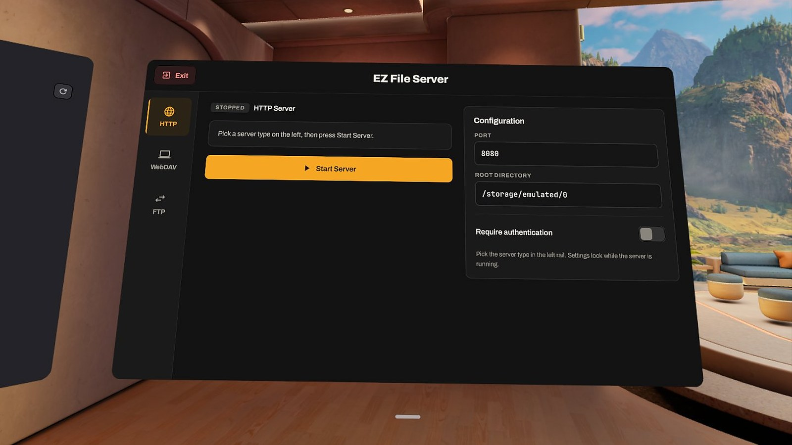
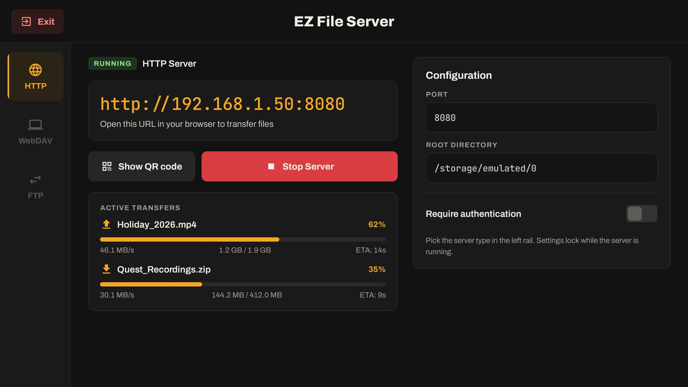
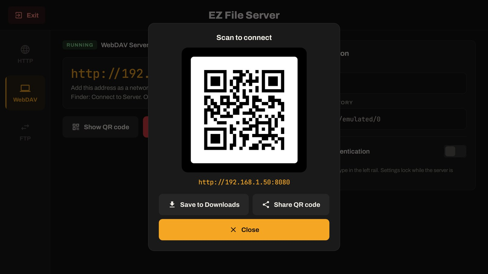
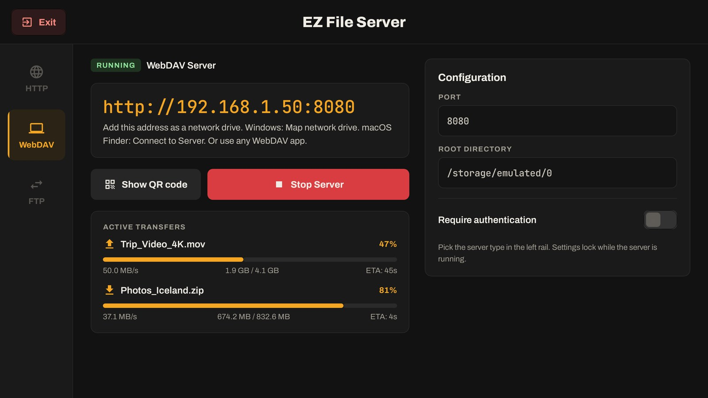
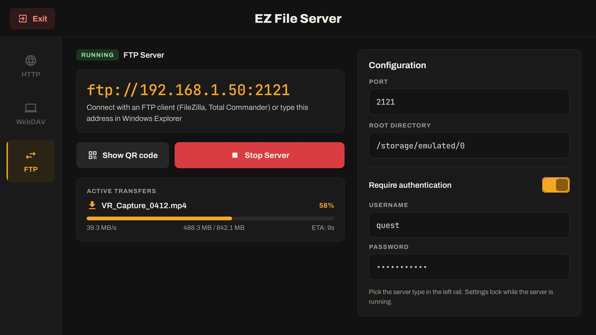

EZ File Server turns your Quest into a file server. Pick HTTP, WebDAV or FTP, press Start, and move files between the headset and any PC, Mac or phone — no cable, no cloud, no account.

One server at a time, chosen with a single tap in the side rail.
Open the address on your PC, Mac or phone. Upload files and whole folders, download files, grab a folder as a ZIP, create and delete folders. Big buttons that work on touch screens.
Add the headset as a drive in Windows ("Map network drive"), macOS Finder ("Connect to Server") or any WebDAV app, and work with it like a USB disk.
Connect with FileZilla, Total Commander or Windows Explorer. Interrupted uploads resume where they stopped.
Too long to type? Show the QR code in the headset and scan it with your phone — or save it and share it.
Choose the port and the folder to share, and turn on a username and password so only you get in.
Every upload and download shows progress, speed and time left, right in the headset.
Headset and computer on the same Wi-Fi — that is all you need.
Open EZ File Server and choose HTTP, WebDAV or FTP in the side rail.
The address appears in big letters, for example http://192.168.1.50:8080. Or show the QR code.
Type the address into a browser, add it as a network drive, or connect your FTP client. Done.




No. Your other device only needs a browser (HTTP), the built-in network drive feature of Windows or macOS (WebDAV), or any FTP client.
Yes. The HTTP panel works in any mobile browser — upload photos and videos straight from your phone and download files from the headset.
No. Files travel only between your devices on your local network. EZ File Server has no servers, no accounts and no analytics. See the privacy policy.
No — HTTP, WebDAV and FTP are plain, unencrypted protocols. Use EZ File Server on a network you trust (your home Wi-Fi), and turn on a password if others share that network.
By default Windows only sends passwords to WebDAV servers over HTTPS. Either start the server without a password, or set BasicAuthLevel to 2 in HKLM\SYSTEM\CurrentControlSet\Services\WebClient\Parameters and restart the WebClient service. FTP and HTTP are not affected.
No — closing EZ File Server (Exit, or closing its window) stops the server, so nothing stays shared by accident. Keep the app open while transfers run. If the headset goes to sleep, Wi-Fi may switch off and the server stops responding — disable auto-sleep for long transfers.